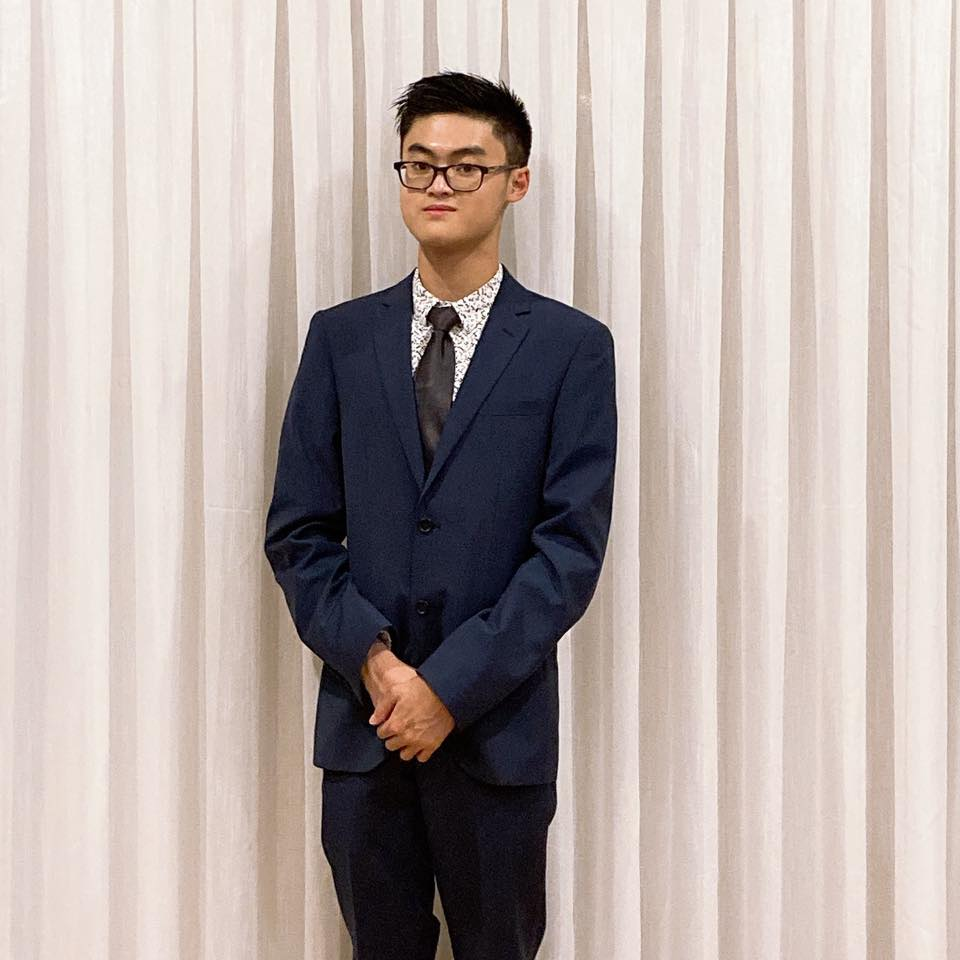
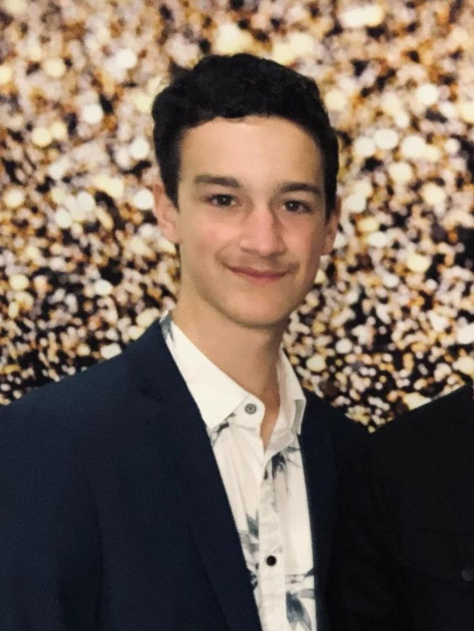
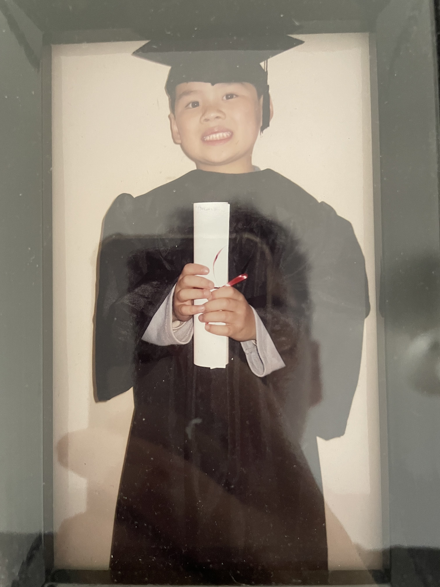

Team Profile
The Travel Guides
Oliver
Website 
Name: Hoang Vo (Oliver)
Student number: s3906188
Email address: s3906188@student.rmit.edu.au
Oliver loves watching anime and reading manga. His favourite anime is Mob Psycho 100, and his favourite manga is Kingdom. Other anime and manga that he likes includes Gurren Lagann, Gintama, Hunter x Hunter, Fate Zero, Berserk, One Piece, One Punch Man and many more.
During his time in High school, Oliver was very interested in sports and fitness. He used to be in his school’s Taekwondo club and participated in many tournaments. He also took part in cross country where he managed to make it to states. During VCE Oliver stopped training due to his studies and after VCE, he has already lost his habit of training in fitness and became lazy and washed up. However, he is currently trying to get back in fitness.
Oliver loves playing rpg style and dungeon games. He plays a lot of Pokémon, Moonlighter, Soul Knight and his favourite game, Undertale. He plays a couple of multilayer games with his friends such as Super Smash Bros Ultimate and Minecraft. He tried playing League of Legends, but the learning curve was way too high, and he could not do it. Oliver also likes playing tabletop games and card games such as Coup, Exploding Kittens, Unstable Unicorns etc.
IT experiences and interest
Oliver has never been good with computers but has always been interested and curious in them. Whenever he learns something new about computers either from the internet or from a friend who is a computer whiz, he would be amazed and be like “wow I didn’t even know that was possible.” IT requires constant learning and education as there is constant new developments. He also enjoys helping his mum and grandmother with computers and IT problems to the best of his limiting abilities. Learning IT would give him the knowledge and skills to help make other’s jobs easier.
When Oliver was young, he played a lot of Minecraft and would watch lots of mod showcases which made him want to get mods himself. Oliver would usually ask his father to get the mods for him, but after he moved to Sydney, Oliver learned how to get mods for Minecraft and other games via YouTube. Being able to get mods made Oliver feel very accomplished and he think that had an influence on his interest in IT.
Playing a lot of games in his childhood made Oliver very interested in them. Becoming a game developer would be very nice for him, but anything that has to do with bringing ideas to life through IT is very interesting to Oliver.
Career Plan
1. For me to be a web designer I must complete my Bachelor of Information of technology, which will take me 3 years to complete. This degree will me to understand the basic of front end-coding, which can help me to build a website
2. Step 2 is to hone your craft by gaining more experience and keep on learning design techniques and theories. Since design style and preferences changes over time, it is important to a variety of skills set that can be apply to different work environment
3. Get a web design industry certification, although it is not necessary to have one, it will greatly improve on my career prospects. This certification will prove that I have a good knowledge and proficiency in crucial areas of the web design industry.
4. The last step for me is to build a personal brand. By having good portfolio of past projects, I will be able to show potential employers. This will allow me to have more connection will people, allowing me to have more job opportunities. Since I will be very new to this, joining industry or organizations relating to web designer will gain me more experience in building in my own brand.
Claire
Website

Name: Claire Cheffings
Student number: s3943096
Email address: s3943096@student.rmit.edu.au
Claire is an 18 year old who graduated high school last year born in Melbourne to parents of Cypriot and British heritage. She enjoys many form of rock climbing, although she is currently focusing on bouldering; a shorter, more intense form. She aims to attend the Youth National competition in bouldering in early June.
IT experiences and interest
Claire has always been curious about technology and wanted to know how things worked but her interest in IT as a career probably started in year 10 and increased in year 11 when she did cybersecurity and coding courses online when she finished my online schoolwork early. She is particularly interested in cybersecurity/penetration testing or system administration as a career but is also interested in developing things. In year 11 Claire played around a bit with html and css and it didn't turn out completely horrible, but it wasn't great. Claire chose RMIT because it is more convenient to access than other universities such a Monash and she didn't even check the commuting time differences because she would prefer 45 minutes on a train over a tram or goodness forbid, having to change busses or something in the middle, even if it only took 20 minutes. She was also attracted to how job ready RMIT makes its graduates, because from my research it seemed that RMIT is more practical while fancy places like Melbourne don't teach the students how to do jobs. Claire is not sure yet what IT electives she will chose in the coming semesters, but she think she will start with something to do with security.
Career Plan
1. Complete Bachelor of Information Technology. As shown in the picture from Open Colleges (2022), most current IT security or systems administration professionals have at least a diploma or advanced diploma (open colleges, 2022). Getting a bachelor's degree instead of a diploma could help me get hired.
2. It could be helpful to gain extra qualifications such as a Certified Ethical Hacker (CEH) certificate.
3. Gaining experience working in cybersecurity or a related field will be very valuable. I will need to get an entry-level position where I can learn about the workings of the industry.
Matthew
Website 
Name: Matthew Rottura
Student number: s3948878
Email address: s3948878@student.rmit.edu.au
Matthew Rottura is an 18-year-old born and raised in Australia. He graduated from Parade College in 2021 and then enrolled into a Bachelor of Information Technology at RMIT. Matthew has always had an interest in IT since early in high school, buildings IT systems and learning about the various IT work his father and uncle, who also studied this exact course, during his earlier years. In his free time, Matthew enjoys go-karting and gaming with his mates and is a very avid supporter in Formula 1 and AFL.
IT experiences and interest
During Matthew’s early years of high school, he began to think about what really interest him and how he could relate that to his further studies after high school. As a casual gamer at the time, Matthew started to notice that he was really interested in computers and networks, this interest started with the casual Linus Tech Tips videos on how to build a computer which led to himself specing, building and set up the required network for his very own gaming rig. In addition to this at home interest, Matthew’s high school also provided a Software development class during VCE which he performed very well in and topped the class in most assessments which further enhanced his interest in IT. Finally, after sharing a memorable experience of building a PC with his father and uncle, Matthew continues to learn about a vast array of useful tools and tricks that he can use to further excel his knowledge in information technology, from professionals in their respective fields being program management and network administration.
1. The first step to become a Network Administrator is to complete my Bachelor of Information of technology, by obtaining this qualification, it give myself the best opportunity to demonstrate the various skills I have learnt for Cisco networks.
2. Gaining experience within a work environment and various other computer systems will give myself the ability to understand and interact with how different computer work within a network. This experience will then be used to apply for various
3. Obtain relevant IT certificates such as Windows, Novell and Cisco that will be useful in network administration
4. Undertake professional development to ensure skills are up to date with an ever evolving industry trends
Andy
Website 
Name: Andy
Student number: s3948878
Email address: s3948878@student.rmit.edu.au
Andy is a recent graduate from Bray brook college, he is 18 years old and was born in Australia. Both of his parents are from Vietnam and fled to Australia due to war. He can speak 2 languages but is also trying to learn Japanese in his spare time. Some of Andy’s hobbies consisted of playing sports and video games. Andy’s interests in IT stem from his older brother who is the computer guy in the family. Andy is trying to pursue a job in software developer field or cybersecurity and is undecided in which pathway he wants for his career.
Career Plan
1. To become a software developer, I will need to complete my Bachelor of Information of Technology, during this time I will try and develop my coding as this will be a big part of my job.
2. I will need to build my non-technical skills as well as this allow my soft skills to improve as well as being a better team player in a team environment.
3. I will also need to learn technical skills such as SQL which is used for databases in a program.
4. After following these steps, I will begin to apply for positions that will fit my role and repeat this until I find a job.
Tommy
Website
Name: Tommy Ngo
Student number: s3900254
Email address: s3900254@student.rmit.edu.au
Tommy is 19-year-old, born in Australia but was raise in Vietnam. He graduates from Simonds Catholic College in 2020.After that he study biotechnology at RMIT but decided to drop out because it wasn’t for him, instead he chooses IT as his career path. He like to travel and in his spare time, he plays guitar or games with his friends. Some of his favourite game and places to travel to is Elden Ring and Japan. When Tommy travelled to Japan, within three days there he has already felts in love with the culture, peoples, foods, sceneries and everything they offers, from there he just wants to experience what other country and culture got to offer as well. Unfortunately, Tommy couldn’t travel much for the past 3 year because of covid however he already planning trip such as Japan again, Canada and Korea for this year when border start easing up.
IT experiences and interest
Tommy interest in IT was sparked in year 12 by watching a youtuber name Michael Reeve. Who is make “comedy-tech” video. He was inspired by him, watching him make Tommy realise that IT is not all about data and working on a computer. But it also can be very fun and practical. Other than that Tommy have not had much exposure to IT or have any real IT experience.
Career Plan
1. For me to be a web designer I must complete my Bachelor of Information of technology, which will take me 3 years to complete. This degree will me to understand the basic of front end-coding, which can help me to build a website
2. Step 2 is to hone your craft by gaining more experience and keep on learning design techniques and theories. Since design style and preferences changes over time, it is important to a variety of skills set that can be apply to different work environment
3. Get a web design industry certification, although it is not necessary to have one, it will greatly improve on my career prospects. This certification will prove that I have a good knowledge and proficiency in crucial areas of the web design industry.
4. The last step for me is to build a personal brand. By having good portfolio of past projects, I will be able to show potential employers. This will allow me to have more connection will people, allowing me to have more job opportunities. Since I will be very new to this, joining industry or organisations relating to web designer will gain me more experience in building in my own brand.
Test Results
Tommy and Oliver scored the same result of ENTP-T, and Andy and Claire received similar results of INTJ-A and INTJ – T respectively which are both Architects. Matthew was the only one out of the group who scored Protagonist (ENFJ-A).
The group members were split as close to 50/50 as possible (since we are a group of 5) in the ‘introverted’ (2)/’extroverted’ (3), ‘judgers (3)’/’perceivers (2)’, and ‘assertive’ (2)/’turbulent’ (3) categories. All members of the group were judged as being ‘intuitive’ and Matthew was the only one who was ‘feeling’ as opposed to ‘thinking’.
If the results are interpreted and a connection to real life is to be made, these results suggest that since Andy and Matthew were judged to be ‘assertive’, they may take the lead in meetings, Matthew may be the only one who considers others’ feeling when making decisions while everyone else may be the only ones to “make decisions with [their] head and want to be fair” (Myers-Briggs, 2022).
Of those who completed a learning style test, Claire is a tactile learner while Andy is an auditory learner, Tommy is an auditory and visual learner and Matthew is a visual learner. This suggests that since both Tommy and Andy are auditory learners, spoken information from things such as meetings and conversations may be more meaningful to them, but since Tommy is a visual learner as well and Matthewa is a visual learner, they may get more from reading the information.
Matthew has the role of ‘diplomat’ and strategy of ‘people mastery’ while Oliver has the role of ‘analyst’ and the strategy of ‘social engagement’. This suggests that Matthew may be good at organising the group with good people skills, while Oliver may be good at being impartial and hard working.
Claire and Andy completed the ‘Big Five’ personality test, and Andy’s biggest feature was agreeability while Claire scored highest in intellect/imagination. This could suggest that Claire may be useful in making things such as the website since it may involve imagination.
Overall, most of the group were shown to be quite analytical and objective with weaker people-skills other than Matthew who scored highly in leadership and people-skills as he received the ‘front-line leader’ result in his leadership style test, contributing to the pattern of good emotional intelligence and interpersonal skills shown throughout his test results. The results suggested that Matthew may be good a leading the group when it comes to meetings and communication.
Career Plans
Group Processes
How well did your group work together in Assignment 2?
Our team did well in communication and organisation. We were able to efficiently divide each task to each week and then assign each task to a person. This was very helpful to us as each person would know what they are doing and there would be a deadline for each week which motivate us to finish our work faster. Another thing we did very well as a group was communicating on a range of different platforms; Facebook, Teams, etc with each other. If one of us could not make it to a meeting we would let the rest of the member know, or if one of us would need help or clarification they would reach out.
Will you be introducing any changes in process for Assignment 3?
During Assignment 3, we will try and improve the attendance of meetings online, so we all have a clear understanding what needs to be done and what we are falling behind on. Setting up meeting when we all join, and work collaboratively will be newly introduced to try and boost productivity and concentration on urgent tasks rather than going off and getting distracted.